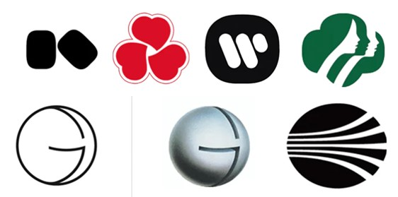

Saul Bass
A pioneer of film title sequences
By Emily Ussher
Introduction
In the 1950s Saul Bass became famous in the design world with some of his iconic and innovative designs for movies posters and motion picture title sequences for films like North by Northwest, The man with the golden arm and Psycho. He was a pioneer of the modern title sequence designing. (Saul Bass | Biography, Designs and Facts, 2020).
Paul Bass was an accomplished American graphic designer, filmmaker, and logo designer – he designed timeless and iconic brand marks like for example: Kleenex Logo – Designed in the 1980s, Continental Airlines Logo – Designed in 1967, Girl Scouts Logo – Designed in 1978, among others. Many still in effect to this day. He introduced a new art form with his imaginative film title sequences that conveyed the essence of a movie and prepared the audience for what they were about to see. (Bauer, 2020). His style was considered modernist for his time. What made his work so unique was the rough and unpolished appearance of his work and his ability to transform every day, ordinary objects into art. His personal style is thought invoking, storytelling, witty and ingenious (Rawsthrone 2011). His approach to design was always purposeful, never mindless, he created his designs as a solution or answer to facilitate understanding. He would find strong, graphic symbols to apply as a summary for the film. Bass believed that as a modernist it is impossible to not have a layered and complex piece visually but instead arrive at as a single visual essence. (McG 1996)
Life
He was born on the 8th of May 1920 in the Bronx, New York, U.S to Eastern European Jewish immigrants (Saul Bass | Biography, Designs and Facts, 2020). He died on the 25th of April 1996 in Los Angeles, California. From a young age he enjoyed drawing; after finishing high school he received a fellowship to the Art Students league in Manhattan and then Brooklyn College, here he was taught by György Kepes – someone who greatly influenced Bass’s work. He taught Bass how to understand the unity of opposites and physical modulation of light (King and Bass 2011). Bass attended further education later in his life due to the depression era and his family needing him to work to support them (Bauer, 2020). Bass worked as a graphic designer for advertisement until 1952 when he was able to set up his own practice, Saul Bass associates, this is when most of his most prominent designs arose.
Bass’s involvement with Hollywood began when he started designing posters for movies; in fact, the animated opening sequence that he created for Preminger’s The Man with the Golden Arm (1955) that made his reputation.
Branding
Using his iconic, minimalists design Bass branded, his designs were known to be clean, thoughtful, and made to last. Some of his most prominent designs were the AT&T (1986), the American Bell Telephone Company (1969), Kleenex (1980), Continental Airlines, Girl Scouts of America, and Quaker Oats, among other logos. I like how simplistic his work is and his skilful use of negative space. Nowadays you could recreate his work in Adobe illustrator, but when Bass was designing his work he created it with cut paper, he might have even had to use scissors or an X-acto knife; the use of these tools might have been what allowed him to cut lines with such subtle curves or in some cases hard corners. As can be seen in his designs below, Bass was skilled at playing around straight lines, hard corners, and curved lines. (Saul Bass: The man who changed graphic design, 2020).
Bass believed a trademark must be readily understood yet possess elements of metaphor and ambiguity that will attract the viewer again and again. Within two years after Bass redesigned the than 90 percent. (Meggs and Purvis, 2016).
Some of Bass’s work are still in use to this day – maybe due to their simple, solid and perhaps timeless design, for example, his design for Warner Communications (1972), Girl Scouts (1978 – although a slight modification was made in 2010 redesigned by OCD Agency), Kibun (1964), Kosé Cosmetics (1972) and Geffen Records (1980). His designs can be considered as timeless maybe due to their readability and legibility, they catch the viewers eye and communicate a message that does not discriminate or become interrupted by language. Bass managed to create simplistic, understandable, and uncomplicated logo designs, many of which have withstood the test of time.
Film titles
“My initial thoughts about what a title can do was to set mood and the prime underlying core of the film’s story, to express the story in some metaphorical way. I saw the title as a way of conditioning the audience, so that when the film actually began, viewers would already have an emotional resonance with it.” – Saul Bass
Bass was first hired by director and producer Otto Preminger to produce a design for the movie poster, however his incredible ability to capture the mood of a film with simple shapes and images, was what set him apart and impressed. (Miller, 2019)
Conclusion
The most notable aspect of his designs would be his use of simple geometric shapes, symbolism, and his ability to create powerful imagery with basic shapes. Although his designs were simple, they were very sophisticated. His style was considered modernist for his time, his film sequences especially. Bass managed to create lasting corporate identities and amazing film sequences due to his ground-breaking personal style.
Bibliography
9 Alice Rawsthrone. “The Man Who Made the Title Sequence Into a Film Star.” The New York
99designs. 2020. Saul Bass: The Man Who Changed Graphic Design. [online] Available at:
Bauer, P., 2020. Saul Bass | Biography, Designs, & Facts. [online] Encyclopedia Britannica. Available at:
Famous Graphic Designers. 2020. Saul Bass | Biography, Designs And Facts. [online] Available at:
Meggs, P. and Purvis, A., 2016. Meggs' History Of Graphic Design. 5th ed. Hoboken: Wiley, p.422.
Miller, E., 2019. Saul Bass: Graphic Designer Profile. [online] Lifewire. Available at:
Pat King and Jennifer Bass. Saul Bass. Laurence King Publishing Ltd, 2011.
Robert McG and Thomas Jr. “Saul Bass, 75, Designer, Dies; Made Art Out of Movie Titles.” The New York Times. April 27, 1996.
Times. November 26th, 2011.